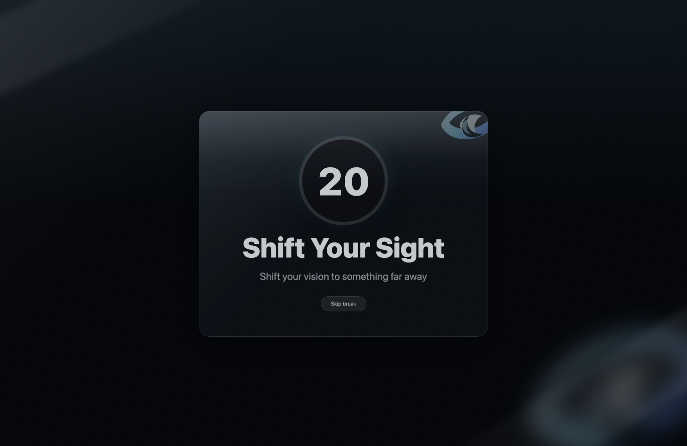
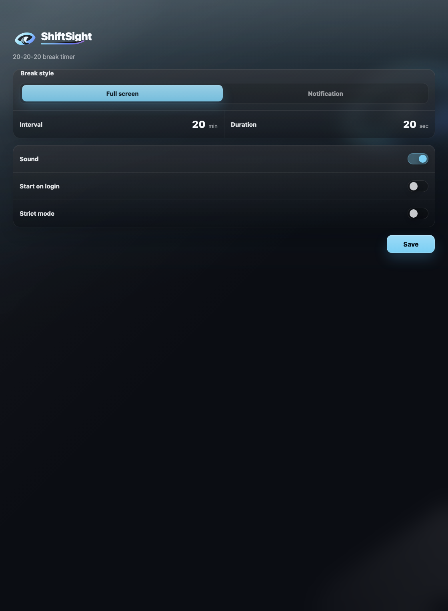

Pause before your eyes get tired.
A short break gives your eyes a moment to relax their focus and look farther away.
A calm desktop app that reminds you to rest your eyes for 20 seconds, every 20 minutes.
No account. No cloud. Just a quiet reminder to look away.


A short break gives your eyes a moment to relax their focus and look farther away.
No accounts, streaks, feeds, dashboards, or extra attention pulled away from your work.
Use a gentle notification, or turn on the full-screen break when you need a clearer boundary.
Why it helps
The hard part isn't knowing you should take breaks. It's remembering to take them while you're in the middle of something.
When one more minute turns into an hour, a timed reminder gives you a clean place to pause.
Twenty seconds isn't a productivity system. It's just enough time to look across the room.
Your settings stay on your device, and the app doesn't need a server to do its job.
Actual app UI
It lives in your menu bar, counts quietly, and only steps in when it's time to rest your eyes.
How it works
The default is the 20-20-20 rhythm, but you can change the timing and choose how strongly the app interrupts you.
Every 20 minutes, rest your eyes by looking at something far away for 20 seconds.
Use the overlay when you want the break to be hard to ignore.
The timer runs locally, so it keeps working without an internet connection.
Open the app, set your timer, and move on. There's nothing to sign in to.
The app doesn't collect analytics or send your usage data anywhere.
Change the interval or break length whenever your routine needs something different.
Hide the skip button when you want a stronger boundary around your breaks.
Research and guidance
ShiftSight isn't a medical treatment. It's a practical way to follow break advice that eye-care groups already recommend.
The American Optometric Association describes computer vision syndrome as eye and vision problems linked to prolonged screen use.
AOA guidanceEyeWiki, from the American Academy of Ophthalmology, notes that people using screens for long periods should take breaks and blink frequently.
AAO EyeWikiA 2023 clinical study tested 20-20-20 reminders and reported reduced digital eye strain and dry-eye symptoms during the reminder period.
PubMed studyA 2023 peer-reviewed letter questioned whether the exact 20-20-20 numbers are fully justified. ShiftSight treats the rule as a habit, not a cure.
Optometry study